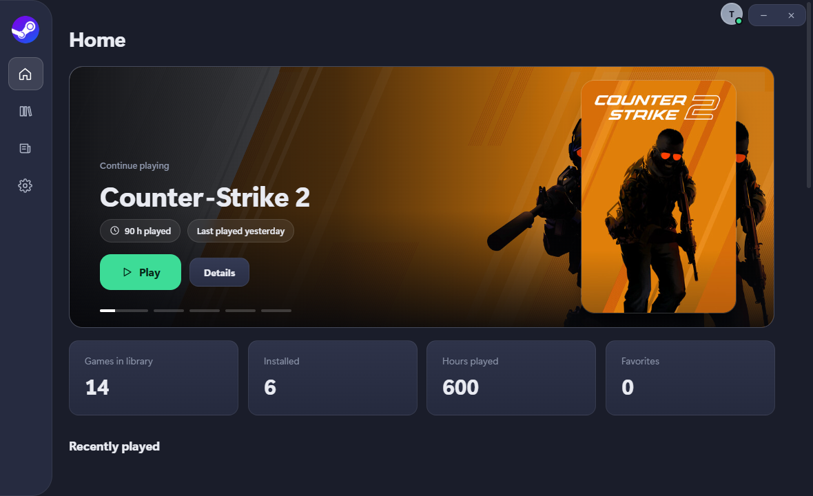
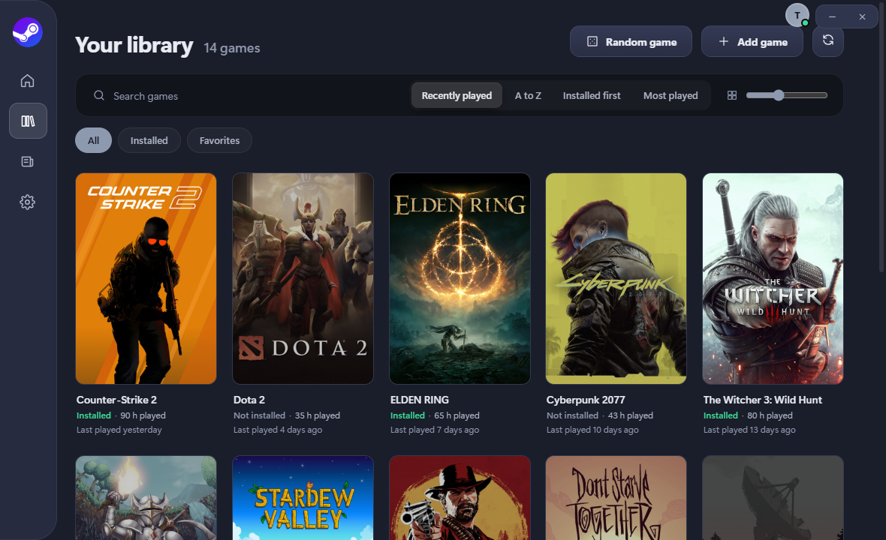
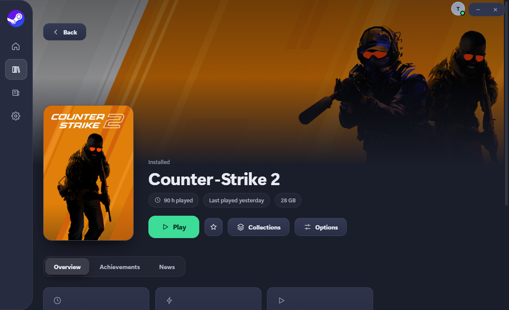
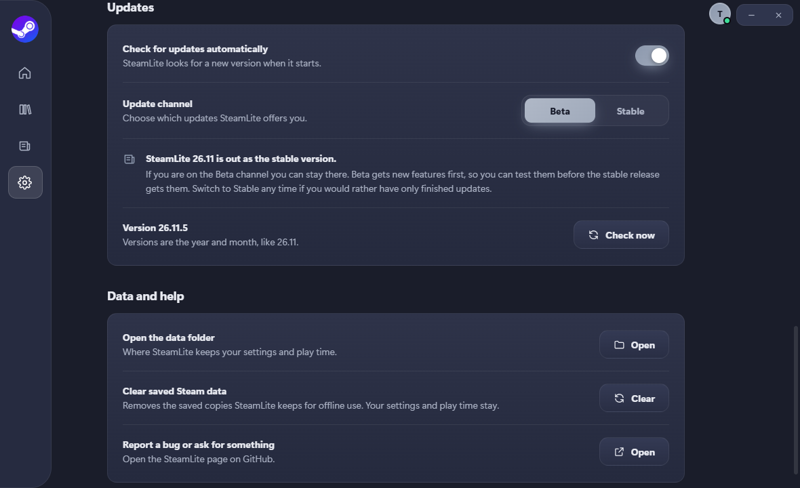

A library you can scan
Plain covers in a clean grid. Every game says whether it is installed, how long you have played and when you last played it.
SteamLite shows your games, launches them with one button and keeps count of your play time. Free for Windows.

What it does
No overlay, no store, no feed. Just your library, clearly laid out.
Plain covers in a clean grid. Every game says whether it is installed, how long you have played and when you last played it.
Green means go. Stop appears while the game runs.
PlayFollows games started by a launcher, and Steam games started from Steam.
Group games your way, mark favorites, hide what you never play.
Instant search. Sort by recently played, A to Z, installed first or most played.
Steam's own sign-in page. SteamLite never sees your password, and your library, collections and play time carry over from 10.x.
Update now closes SteamLite, updates it in place and opens it again. Choose Stable or Beta in Settings.
Take a look



Getting started
Get the installer and press Install. It installs just for you, so it normally needs no administrator rights.
Steam's own sign-in page opens in your browser. Make sure your profile's game details are public.
Your library loads. Pick a game and press Play. SteamLite counts the time.
Download
Stable is finished and tested. Beta gets new features first. You can switch any time in Settings.
The release for everyone. Updates arrive when they are finished.
Windows 10 and 11
Try new features before the stable release gets them. It may have rough edges.
Windows 10 and 11
Questions
SteamLite opens Steam's own sign-in page in your browser, so it never sees your password. The sign-in is confirmed through the SteamLite server, and the token it saves is protected by Windows.
Steam needs a free Web API key to hand over your game list. SteamLite asks once and saves it to your account. You can get one from Steam's website.
Set Game details to Public in your Steam privacy settings, then press refresh in the library.
Yes. Install 26.11 over 10.x. Your settings, favorites, collections and play time are read from the same place, and you sign in with Steam once.
To keep SteamLite focused, these are not in 26.11: Messages and friends, themes, the in-game overlay, streaks, the rewards system, cloud backup and Discord presence. If you rely on them, 10.1.5 is still available.
Stable if you want finished updates only. Beta if you want new features before the stable release gets them. The release notes for every version are on the changelog.